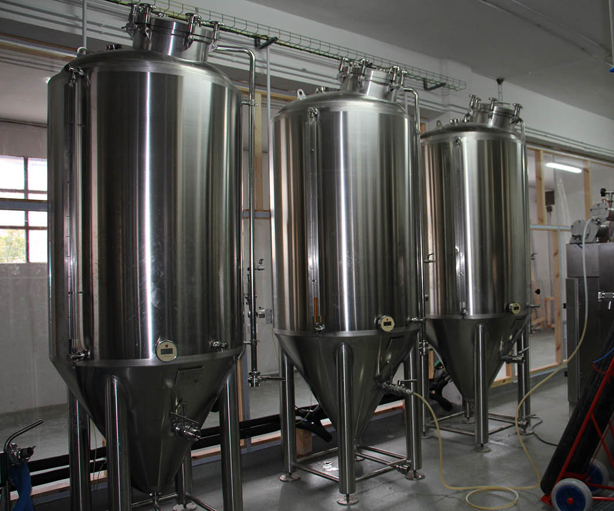

Armamos tu fabrica a medida y te ofrecemos un servicio integral en asesoramiento para emprendedores con el objetivo de lograr el stock necesario para cubrir las metas del plan de negocios:
Ofrecemos servicios para quienes tienen una fabrica de cerveza en funcionamiento y desean mejorar practicas, recetas, calidad del producto con el objetivo de abrirse paso en el mercado cervecero:
Contamos con un taller de herrería especializado en equipamiento cervecero y expertos en diseño de fabricas de cerveza para ofrecer el mejor equipo acorde a los requerimientos de cada proyecto:
Ofrecemos servicios de grafica, comunicación y posicionamiento de tu marca de cerveza: